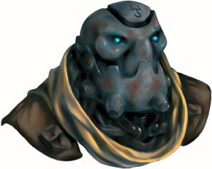

Week 24 - Civil engineering in Sharn; or: Damn, that's sure going to inconvenience a lot of people.
Our story begins on Monday (Sul 23rd) when our heroes, fresh from their crowning victory in the games, discover their sage has been brutally murdered in his apartment in Northedge. Grumbling that their victory missed the evening edition, this page of the Sharn Inquistive is passed around:
|
War Widow Land Grant Lottery Set "War Widow" Land Grant Lottery Set for 28th of Barrakas FAIRHAVEN—Queen Aurala has set a date for the long-anticipated land-grant lottery: the 28th of Barrakas. A court decree on Far set a date and drawing procedure for the lottery, set to take place at noon in Fairhold’s Vermillion Pavilion. But the decree noted that some eligibility requirements for specific land parcels are still under review, leaving unclear who’ll be able to place lots for some of the more sought-after properties. Although it’s widely referred to as the “war widow” lottery, only some parcels are designated specifically for widows of soldiers who fell in Aundair’s service during the Last War. Preliminary drafts of the lottery parcel list have shown a wide array of eligibility requirements. Many parcels will be given to those with relatives lost in the Last War, while others are set aside for Aundair’s veterans. Most of the prime parcels have additional requirements of noble title, sometimes of specific families living nearby. While the crown decree takes pains to point out the Queen’s generosity in giving away large tracts of land, the land-grant lottery is expected to fill Aundair’s coffers in the long-term. Many of the parcels in the lottery are crumbling, vacant castles with significant upkeep costs and no arable land nearby. Once removed from the crown’s rolls, the land parcels become taxable property once again. Thus the crown is both spared upkeep and may garner revenue from the land-grant lottery. |
The land-grant lottery was originally scheduled for last month, but has been twice delayed as Aundairian courts adjudicated claims from distant relatives and other parties seeking to keep specific parcels out of the lottery. In many cases, ownership of a parcel fell to the crown when its owner died in the war and no inheritor was available. But once a parcel appears on the list for the lottery, “second cousins, secret wives, and every con artist in Aundair have come out of the woodwork” to make an ownership claim, said one magistrate speaking on condition of anonymity. Northedge Sage murdered SHARN—Northedge Sage Eligos the Erudite was found dead this morning. Details are still sketchy, but at the time of print the Sharn Inquisitor can confirm that the death is being treated as suspicious. Watch Commander Kurna Dalgoria has called for any witnesses to make themselves known to the authorities. Dogs on the menu? SHARN—Residents of Northedge may think twice the next time they consider dining out. As many as a dozen residents have reported their pooches missing over the last few days. One resident, Norma Bagel, speculated that her puppy had been nabbed, “by some folk who like to et dog, you know who I mean. I seen ‘em take ‘im I did — a hulking brute ‘ee was!” |
Flash communicates with his master, Allustan, and decides to return to Diamond Lake at once. Frith decides to accompany him in order to seek illumination on the Apostolic Scrolls, which have recently come into his possession. The rest of the Rough Diamonds resolve to look into Eligos’s death, and head to Northedge, the most residential of Sharn's quarters. This district contains everything from towertop penthouses in the heights to tightly packed apartments on the lower levels. Aside from a marketplace district near the bottom of the towers, Northedge is a quiet neighborhood with little commerce and little crime (not for long!).
As Tom has been missing since the fight with the Apostolic Horror on Saturday, the party now consists of Constable Tool, Arn and Jericho. Upon arriving at the address, they see a large figure arguing with the smaller but no less animated Commander Kurna Dalgoria. After giving Constable Tool a right dressing down for participating in the games while on duty, she lumps the murder case on him. According to Commander Kurna, the mastermind of the undead lurking beneath the games, Raknian, was seen boarding the lightning rail to Wroat on Saturday afternoon just after all hell broke loose in the arena. Unfortunately, the trail went cold in Wroat last night. This seems to put him in the clear for this murder, as the Watch physician estimates Elgios died two nights ago: on Saturday night.
She gives Jericho a suspicious look, and decides to head back to the Watch. “You – deal with – this!” she says, pointing at a Goliath who wants to cross the Watch line.
The Goliath, Gauthakan, turns out to have been freed by Eligos last year after being sold as a gladiatorial slave. He is keen to take revenge on whoever killed Eligos. Constable Tool takes command of the situation and begins the investigation, vowing that Justice, not Revenge, will prevail. The apartment, were it not for the stench of death, the body slumped in the centre of the lounge room and the ransacked contents strewn everywhere, would have been quite comfortable. Reasonable views of the setting sun can be seen from the west windows, and the ceilings are quite high: 10ft. Antiquities and curios litter the floor, having been ripped from the walls and shelves. A cursory glance at the curios, which are of low to medium value, convinces Jericho that this was not a case of looting (familiar as he is with the crime).
Eligos’s body has a deep slashing wound at the rear left of his neck. The blood-soaked carpet beneath the body indicates he died where he fell. He is wearing evening robes.
A locked door distracts the party from a through search of the living room, and Jericho manages to get it open, forgetting to inspect the lock first to see if someone else had picked it. The door guards a small laboratory, containing equipment for dissecting small animals, including the cadaver of a rabbit.
A search reveals a small bundle of Eligos’s papers. A note on the bundle concerns Eligos’s investigations into the evidence supplied by the party on the foreboding Age of Worms.
Far, 21 Rhaan, 998 YK
My dear friend Allustan,
What your adventurers have stumbled into sickens me to my soul. Every new leaf I turn reveals an even darker secret. Here are my notes. You must take them to our one-time master - although I fear that even he may be ill-equipped for what writhes in all of our futures. Until then…
There is also a pair of gold rings, the larger engraved on the inside, 'E', and the smaller, 'A'. Two newspapers are neatly tucked in the letter box, dated from the last two days. Gauthakan notices there is stale urine on the door.
During their search of the living room, the party take turns in interrogating Eligos’s reticent butler, a warforged named Abercrombie.
 Abercrombie is a Warforged employed by Eligos as a butler and nightwatchman. He has worked for Eligos since the War ended two years ago, there being no need for such large numbers of infantry. Abercrombie’s frame is powerful, and he still sports the close combat modifications from the war, albeit discreetly.
Although the party fails to strike a rapport with the interviewee, they glean some information:
- He had nothing to gain by killing his master &mdsah; “Unless the estate decides otherwise, I assume my employment was terminated upon the… termination of my employer. You would have to see his solicitor to see who the beneficiary is.”
- Abercrombie was given the weekend off, and last saw his master on Saturday morning (Far 21st)
- He spent his weekend visiting a friend, Susan, who was in repairs following an accident with a sky chariot
- He had never been in the dissection room
- He dislikes Elgios’s assistant, Garn, who he accused of being a drunkard and of poking his nose into the affairs of others
- Garn was due at work here today but had not arrived
- Abercrombie was reluctant to mention any names of recent visitors, but admitted that the last person to visit Eligos was probably “a friend”
Upstairs has also been ransacked. Sheets, pillows, and clothes have been cast about, and even the mattress has been overturned.
Searching the upper level reveals two toothbrushes and woman’s clothing. As the clothing is too small for Eligos, the party deduce that he must have had a close friend. The mattress has been slashed open underneath. But hold a moment; Jericho thinks he saw something outside the window… probably just a bird.
It is at this moment that four black-clad burglars steal through the windows, almost taking the party by surprise. The party allow themselves to be distracted by their harassing tactics while one of them tumbles past to the level below. Daggers are thrown with sleights of hand, elven burglar-wenches are pulled through windows, and Constable Tool and Gauthakan soon have two of them manacled and hog-tied, despite crossbow fire from downstairs.
There is a “swoosh” as blazing arrows sail through the windows, setting the furnishings alight. The remaining burglar on this level takes this as her opportunity to leap out of the nearby burning window.
A tremor knocks Gauthakan to his feet as he carries his captive downstairs, but he does catch a glimpse of the last burglar diving out a window, flames curling around her. Hopefully the two rings Jericho and Arn took from the captives will save them if they have to jump!
Arn makes a line for the front door but is startled to see it is no longer there! He recognises the blank stone wall in its place as magically crafted. Luckily, despite falling over due to the tower’s alarming swaying, Gauthakan is able to break through with three mighty blows of his magic hammer.
Crossbow fire greets him as he begins his balancing act on the walkway from the door. There are half a dozen adversaries awaiting them, some casting spells, some firing bolts. One of the black-clad men creates a patch of murky darkness over the walkway, and the tilting tower make traversing no easier. Luckily Gauthakan had mountain goats in the family, so easily trots across with his captive. In fact all of our heroes and their prisoners make it over under fire, except for Constable Tool, who gallantly elects to throw his prisoner to safety rather than both of them fall. Of course Constable Tool is no fool - he wears a ring of Feather fall. Sharn is a very tall town, and he often finds himself in these kinds of situations.
Meanwhile, Arn and Gauthakan engage their foes, while Jericho holds the bridge. Casting True Strike, these fell crossbowmen hit their targets, but luckily the poison they had previously applied does not overcome our heroes. As the large warforged continues to cast Stoneshape on the structural elements of the tower, Arn cleaves one assailant in twain.
With a mighty crack, the tower implodes, tilting precariously towards our heroes at one point. Luckily Constable Tool is not hit by the falling debris as he floats downwards.
Jericho grabs the trussed captive moments before the walkway collapses. Playing to the strengths of having your interlocutor dangling over a seven-storey drop, Jericho asks, “What were you doing in there?” “Burglary! Is that a crime?” she shrieks. “Who do you work for?” continues Jericho. Despite a brave second of repartee, the captive sees sense and gives up a name: Starshine.
Gauthakan leaps off the edge of this plateau and fells another of these ill-boding blackguards who was Spider climbing down the sheer drop. Luckily for Gauthakan, he was wearing a ring of Feather fall. Unluckily, despite grabbing the falling body, the assailant dies on the way down.
By the time Constable Tool and Gauthakan wind their separate ways back to this neighbourhood, the attackers have fled. Arn, in particular, is fuming because the warforged leader vanished into thin air moments before Arn’s axe would have come upon him. Jericho realises that the two captured elves were equipped with excellent cat-burglary items. On the other hand, the second group of assailants bore vials of poison.
So, this is the news that greets the party the next day:
|
Crowds Expected for Morgrave Graduation SHARN—Today is graduation day for many of Morgrave University’s students, bringing thousands of well-wishers to the University District and throughout Upper Menthis Plateau. City Watch Commander Silaena Cazal said extra patrols would be deployed to manage the teeming crowds throughout the weekend, but that residents should expect to be rubbing shoulders with visitors. “I’ll note that Sharn has several laws on the books to punish overly festive carousing, and I intend to enforce them,” Cazal said. “And the Watch will be particularly vigilant about petty street crime. We’re not going to have a repeat of last year’s disorder.” University District residents reported widespread pickpocketing, confidence games, and assaults during graduation week last year. Most of the traditional academic colleges honor their graduates in a common ceremony in the Great Hall of Aureon at noon. This year’s keynote speaker is Daerin Ollio, noted for his exploration of the mysterious dragon continent of Argonessen. Tower Collapse Was Sabotage, Watch Says SHARN—Authorities suspect magic sabotage in the collapse of Providence Tower in the Northedge district. As of this morning, the death toll in the catastrophe stands at 5, with another 12 injured. Most of the bodies still lie within the rubble, and Watch Commander Kurna Dalgoria said recovery efforts would take several days. |
“Divinations have confirmed that no victims remain trapped in the rubble, and House Jorasco is taking care of the remaining injured. Today our focus has shifted to investigation and the recovery of remains.” Dalgoria said. Dalgoria said the investigation, a combined effort among the Sharn Watch, the King’s Citadel, and celebrity gladiator team, Rough Diamonds, has turned up evidence that the tower’s collapse was no accident. “Wherever these saboteurs are hiding, the Watch will find them. No matter how far they run, we'll be right behind them,” she said. Sentinel Marshal Rorick Thyrish arrived on the scene with the first emergency aid healers. He said dim, lingering magic auras were detected near the tower. “The earth aura detected was probably the spell that damaged the tower foundation,” Thryrish said. “And the travel aura would be consistent with a teleport spell the culprit used to escape the collapse.” Thyrish said a third aura was present: a necromantic residue fainter than the other two. He referred further questions about the investigation to Dalgoria’s office. Dalgoria refused to speculate on the motives of the saboteurs. The tower has several expensive residences, including that of recently murdered sage, Eligos, an independent researcher who once taught at Morgrave University. Dalgoria said any of the tower’s inhabitants could have been the saboteur’s target. |
Will our heroes get any closer to finding the murderer of their favourite bookworm? Why were two groups of assailants so intent on respectively burgling and destroying the residence of a dead man? Will the party continue its restrained modus operandi within the urban environs of Sharn? Will the non-magical signet rings they seized (looted) from their captives work as well as rings of Feather fall? These and other questions may be answered next week, when we trail the Rough Diamonds on the case of “Who killed Eligos the Erudite?”